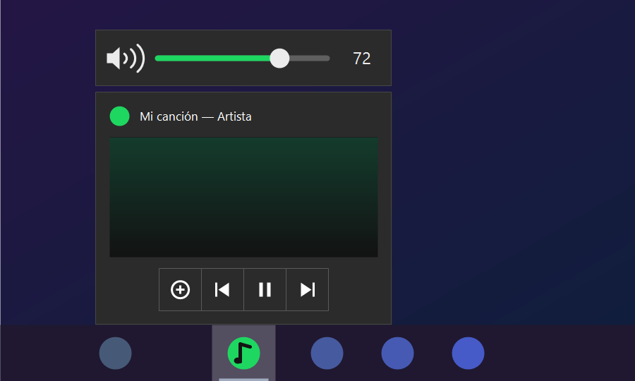
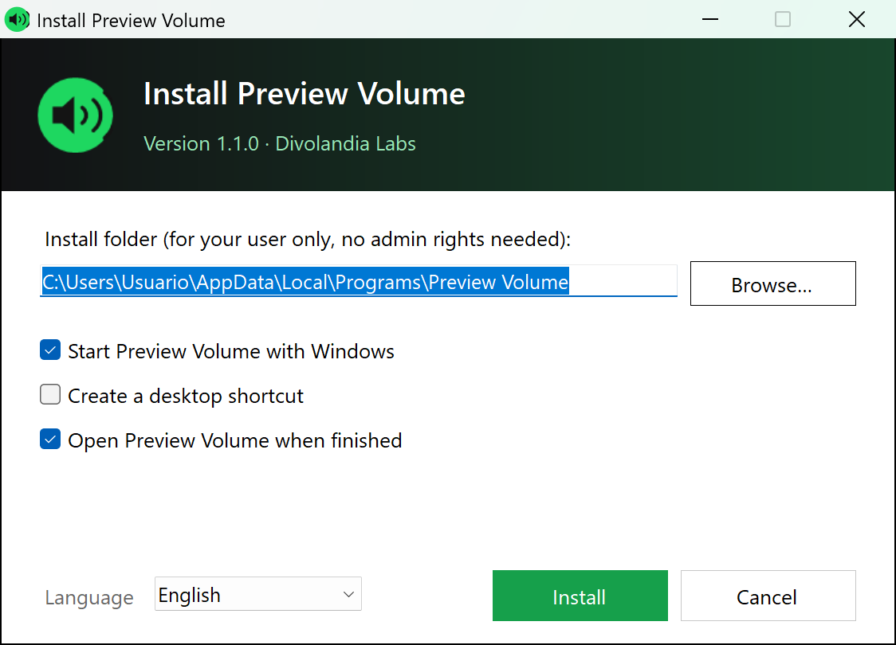

Windows app · free
Spotify's volume, right on the taskbar
Hover over Spotify on the Windows taskbar and the preview shows previous, pause and next — but no volume. Preview Volume adds a small volume bar right above it: drag the slider, scroll the mouse wheel or click to mute.

What it does
A volume control exactly where you already are when you check what's playing.
Slider on the preview
Appears above Spotify's taskbar preview, the same width, with the current percentage.
Mouse wheel
Scroll over the preview or the bar to turn the volume up or down in 2 % steps.
One-click mute
Click the speaker to mute Spotify and click again to bring the sound back.
Any app with sound
Optionally show it for every app that plays audio: Chrome, Brave, media players and more.
Light and quiet
Sits next to the clock, hides as soon as you move away and barely uses any resources.
Any setup
Works with several monitors and any display scaling — 100 %, 150 %, 200 % and beyond.
Windows 10 or 11 taskbar
Pick your taskbar in the installer or the tray menu: the classic one (Windows 10, or Windows 11 with ExplorerPatcher) or the new Windows 11 one. The installer suggests the one it detects.
How it works
Windows only lets an app put buttons on its own taskbar preview, and Spotify already uses them. So Preview Volume draws its own little bar attached to the preview and sets Spotify's level in the Windows volume mixer — the slider inside Spotify stays as it is, and the two add up.

Get Preview Volume
Download PreviewVolume-Setup.exe and click Install. It installs for your user only, without admin rights, and can start with Windows. Uninstall it any time from Settings → Apps. The source code is on GitHub and builds with the C# compiler included in Windows.
The app isn't code-signed yet, so Windows SmartScreen may warn you the first time: click “More info → Run anyway”. Works with the classic taskbar (Windows 10, or Windows 11 with ExplorerPatcher) and with the new Windows 11 taskbar; on the new one Windows doesn’t expose the preview, so the bar’s position there is approximate. Preview Volume makes no internet connections and collects no data.